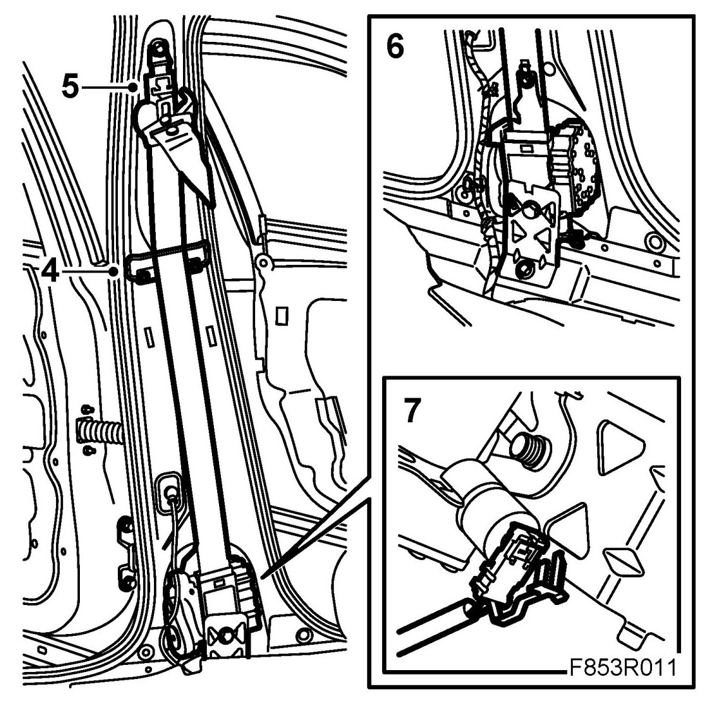

Seat Belt Reel With Tensioner, Front
Seat Belt Reel With Tensioner, Front
WARNING:
- An airbag system that can include an integrated seat belt tensioner comes as standard on the Saab 9-3.
- Work in accordance with the safety and handling instructions described in WebWIS group 8, Body - Airbag system - Technical description - Safety and handling instructions.
To remove
1. Put the ignition key in LOCK position.
2. Dismantle the B-pillar trim.
WARNING: The battery's ground cable must be removed before the positive cable. Wait for at least 1 minute after disconnecting the battery before beginning any work on the airbag system. Otherwise the airbag may be deployed unintentionally and this can cause fatal/severe personal injuries.
3. Disconnect the battery.
4. Remove the seat belt guide.

5. Remove the height adjustment screw and unhook the height adjustment.
6. Remove the inertia reel upper and lower screws.
7. Remove the inertia reel and dismantle the seat belt tensioner's connector.
To fit
1. Connect the inertia reel's connector and insert the inertia reel into position. Insert the upper guide pin first. Exercise care to press the rear piece of the connector into position.
2. Fit the upper and lower bolts of the inertia reel.
Tightening torque, lower bolt 37 Nm (27 lbf ft)
3. Put the seat belt's height adjustment into position and fit the screws.
Tightening torque 37 Nm (27 lbf ft)
4. Fit the seat belt guide.
5. Fit the B-pillar trim.
6. Check the operation of the seat belt.
7. Connect the battery.
8. Now check using the diagnostic tool as follows:
- Connect the diagnostic tool to the data link connector under the dashboard. Delete any diagnostic trouble codes.
- Switch the ignition off and then on again. Wait for at least 1 minute with the ignition on. Check if a diagnostic trouble code is displayed.
- If the diagnostic trouble code is displayed: Carry out fault diagnosis according to the instructions under respective diagnostic trouble codes.
- If the trouble code is not shown: Fitting is successful. Disconnect the diagnostic tool.
9. Carry out Measures after disconnecting the battery.